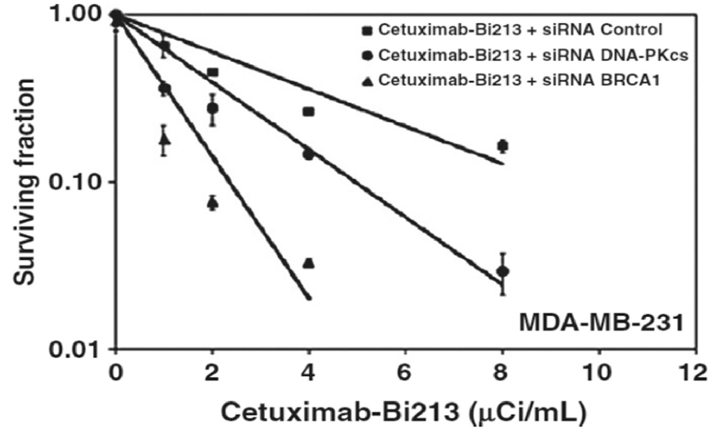
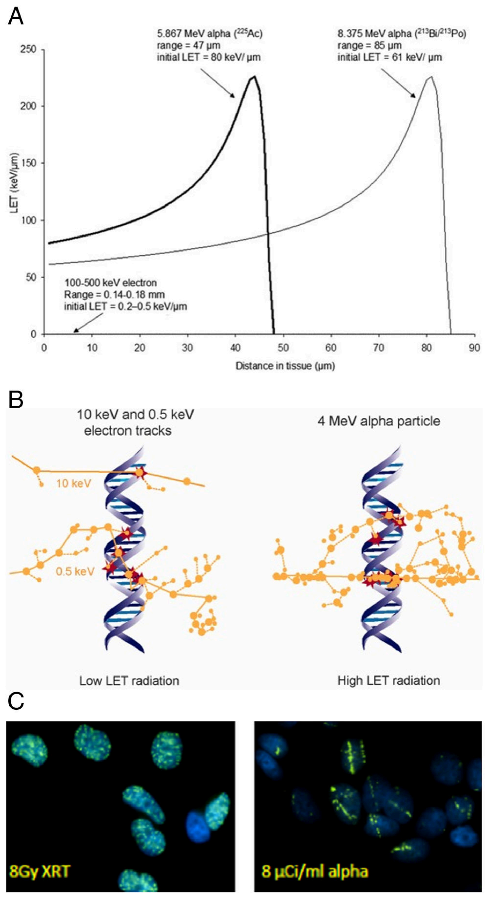
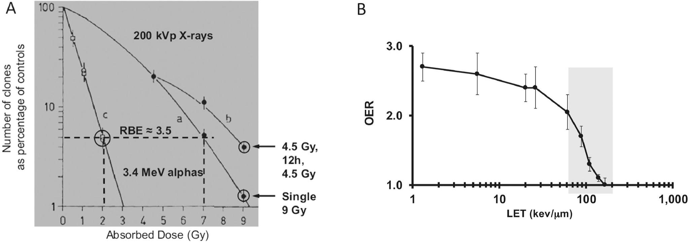
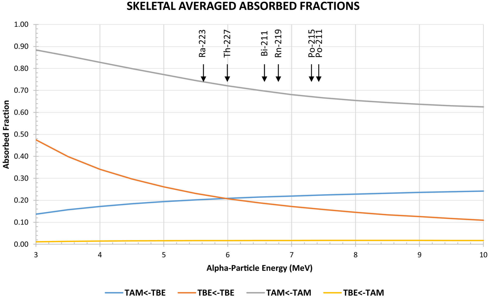
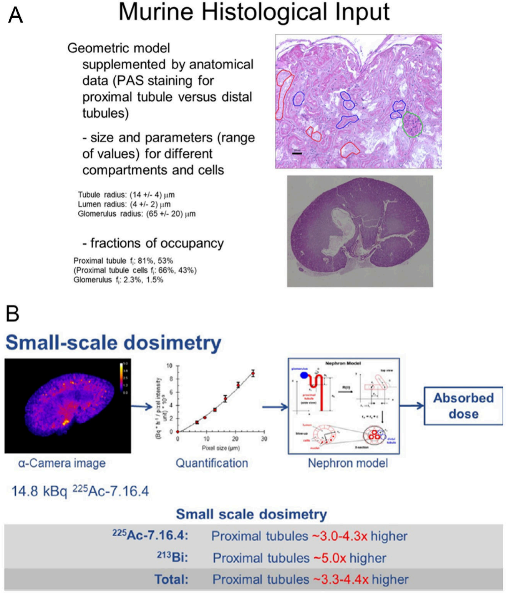
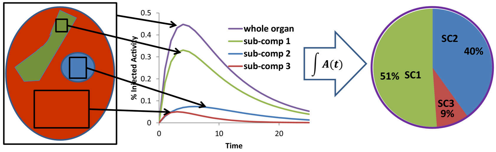

Published in final edited form as:
Semin Nucl Med. 2020 March ; 50(2): 124–132. doi:10.1053/j.semnuclmed.2019.11.002.
Dosimetry, Radiobiology and Synthetic Lethality: Radiopharmaceutical Therapy (RPT) with Alpha-Particle-Emitters
1Radiological Physics Division, Department of Radiology, Johns Hopkins University, School of Medicine, Baltimore, MD
Introduction

Radiopharmaceutical therapy (RPT) with α-particle emitters (αRPT) has drawn the attention of the RPT field and the pharmaceutical industry because α-particle emitter RPT is impervious to the many cancer resistance mechanisms that diminish the effectiveness of all other cancer therapies. Radiopharmaceutical therapy is a cancer treatment modality that delivers radiation to tumor cells in a targeted manner. The radiation is delivered, not as a beam of photons or protons (or carbon ions) from the outside, but as emissions from a radioactive element (a radionuclide) that is conjugated to agents that bind to tumor cells or to elements of the tumor microenvironment. These radiopharmaceuticals are administered to patients systemically or locoregionally. Almost all of the radionuclides used for radiopharmaceutical therapy emit photons that may be imaged using nuclear medicine imaging modalities, radionuclides used for radiopharmaceutical therapy also emit beta particles and α-particles. The latter are particularly effective in causing largely irreparable DNA double-strand breaks. The ability to deliver α-particles directly to tumor cells using tumor targeting molecules is unique to RPT. As α-particles traverse tissue they deposit DNA damaging (ionizing) energy at a density that is two to three orders of magnitude greater relative to that achieved by photons or beta-particles. This high energy deposition density is also delivered over a very short, 50 to 100 μm, range. These properties give αRPT its high potency against tumors that are resistant to other forms of cancer therapy. The high potency and short range can also lead to toxicity. To anticipate or reduce toxicity while optimizing efficacy, early phase αRPT trials should be designed with an understanding of the dosimetry and radiobiology of the αRPT under investigation. Due to the nature of the DNA damage that it induces, αRPT also has a strong potential to be enhanced by inhibiting elements of DNA DSB repair pathways (Fig. 1) in a synthetic lethality-like strategy that would enhance kill only to those cells subjected to DSB damage. This review draws on material from a MIRD Committee monograph on α-particle emitter dosimetry published in 2015 [1] and also covers recent developments and provides an updated perspective on the subject.
Publisher's Disclaimer: This is a PDF file of an unedited manuscript that has been accepted for publication. As a service to our customers we are providing this early version of the manuscript. The manuscript will undergo copyediting, typesetting, and review of the resulting proof before it is published in its final form. Please note that during the production process errors may be discovered which could affect the content, and all legal disclaimers that apply to the journal pertain.
Radiobiology and Synthetic Lethality
The majority of systemically administered cancer therapy currently used in patients, including targeted or biologic therapy targets tumor cells only in the sense that tumor cells are preferentially sensitive to the therapeutic agent.
William G Kaelin’s review of synthetic lethality [2] states that:
Two genes are synthetic lethal if mutation of either alone is compatible with viability but mutation of both leads to death. So, targeting a gene that is synthetic lethal to a cancer relevant mutation should kill only cancer cells and spare normal cells.
The review goes on to say:
Synthetic lethality therefore provides a conceptual framework for the development of cancerspecific cytotoxic agents. This paradigm has not been exploited in the past because there were no robust methods for systematically identifying synthetic lethal genes. This is changing as a result of the increased availability of chemical and genetic tools for perturbing gene function in somatic cells.
In the context of cancer therapy wherein the therapeutic agent interacts with both cancer and normal cells, synthetic lethality and related strategies to induce this are essential to obtaining the needed therapeutic ratio to eradicate cancer without prohibitive normal tissue toxicity. In the context of radiopharmaceutical therapy (RPT), wherein the therapeutic ratio is obtained by specifically targeting and delivering radiation to cancer cells, synthetic lethality is not essential but enhancing. This is particularly the case for RPT using alpha-particle emitters wherein highly potent, short-range radiation induces preponderant DNA double strand breaks (DSBs) that stress already compromised DSB repair machinery in tumor cells that often have deficiencis in their DSB repair machinery. Alpha-particle emitter RPT can utilize a synthetic lethality approach to either enhance therapeutic efficacy or identify patients that are most likely to show the greatest sensitivity to αRPT.
| Agent, manipulation | D0 (Gy) | RBEa |
|---|---|---|
| 213Bi-Rituximab (irrelevant Ab) | 0.84 | 3.8 |
| 213Bi-Cetuximab | 0.87 | 3.7 |
| 213Bi-Cetuximab, siRNA scrambled control | 0.69 | 4.7 |
| 213Bi-Cetuximab, siRNA DNA-PKcs-/DNA-PKcs- | 0.37 | 8.6 |
| 213Bi-Cetuximab, siRNA BRCA1-/BRCA1- | 0.21 | 15.6 |

The potential and degree to which synthetic lethality could enhance alpha-particle emitter RPT (αRPT) has been evaluated pre-clinically using MDA-MB-231, a triple-negative (ER−, PR−, HER2−), and EGFR+ breast cancer cell line. Knockdown of genes involved in the non-homologous end-joining (NHEJ) DNA DSB repair pathway (Fig. 1a) by siRNA increased the radiosensitivity of MDA-MB-231 to alpha-particle induced damage by 8-fold. This enhanced sensitivity was measured as an 8-fold increase in RBE over wild type cells (table 1 and Fig. 2 taken from ref. [3]). RBE in these studies was defined as the absorbed dose of conventional external beam radiotherapy radiation required to achieve 37% cell kill divided by the absorbed dose of alpha-particle radiation required to achieve the same biologic end-point. Accordingly, an increase in RBE requires that the radiosensitivity to conventional (or reference) radiation remain unchanged while the sensitivity (=1/D0) to alpha-particle radiation increase. An alpha-emitter, which is already 3 to 5 times more potent per unit absorbed dose than conventional radiotherapy, can be 8-fold more deadly to tumor cells that have compromised DSB repair than to normal tissue with no DSB repair defect.
| Sample ID | Gene | Origin of mutation | Amino acid change | Nucleotide change | Mutation mechanism | Type of analysis |
|---|---|---|---|---|---|---|
| 02 | BRCA2 | Germline | D3095E | c.9285C>G | Missense | Germline + somatic |
| 03 | BRCA2 | Somatic | E164Qfs*23 | c.4936_4939delGAAA | Frameshift deletion | Germline + somatic |
| 14 | CHEK2 | Somatic | R519X* | c.1555C>T | Nonsense | Germline + somatic |
| 15 | ATM | Somatic | E2014X* | c.6040G>T | Nonsense | Germline + somatic |
| 18 | ATR | Germline | - | c.2634-1G>A | Splicing | Germline only |
| 19 | FANCI | Germline | K808X* | c.2422A>T | Nonsense | Germline only |
| 20 | FANCL | Somatic | T372Nfs*4 | c.1114_1117insATTA | Frameshift insertion | Germline + somatic |
| 29 | PALB2 | Somatic | - | c.212-2A>G | Splicing | Germline + somatic |
| 31 | FANCG | Germline | L53Afs*4 | c.156insG | Frameshift insertion | Germline + somatic |
| 32 | BRCA2 | Somatic | S3147Cfs*2 | c.9435_9436delGT | Frameshift deletion | Germline + somatic |
This implies that patients treated with αRPT agents are more likely to have a better response if they harbor an inactivating somatic or germline mutation in a DNA DSB repair pathway. Evidence for this was obtained from a retrospective analysis of 190 patients with bonepredominant metastatic castrate-resistant prostate cancer (mCRPC), 28 of whom received standard of care 223Ra. Ten of the 28 patients had germline or somatic inactivating mutations in the Homologous Recombination (HR) DNA DSB repair pathway (Fig. 1b) (table 2, from reference [4])
| HRD(+) | HRD(−) | p value | |
|---|---|---|---|
| N = 10 | N = 18 | ||
| PSA (≥50%) response | 0% (0) | 0% (0) | >0.99 |
| ALP (≥30%) response | 80% (8) | 39% (7) | 0.04 |
| Patients with ALP normalization (if baseline ALP was elevated) | 100% (5) | 33% (3) | 0.03 |
The response to 223Ra of these 10 HR deficient (HRD+) patients was compared to that of patients with no inactivating HR mutations (HRD−), and was found to be superior. These results are summarized in table 3.
As noted in this table [4], the time to alkaline phosphatase (ALP) progression for HRD+ patients was 10.4 months; it was 5.8 months for HRD− patients (hazard ratio [HR] 6.4, 95% CI, 1.5–28.9; p = 0.005). Time to clinically indicated next systemic therapy was 9.7 and 7.2 months for HRD+ and HRD− patients, respectively (HR 1.5, 95% CI, 0.5–5.3; p = 0.39). Finally, overall survival was also greater in HRD+ versus HRD− patients (median 36.9 vs 19.0 months, HR 3.3, p = 0.11).

Much of our understanding of the molecular basis of DNA repair, along with the synthetic lethality concept that is derived from it, did not exist when the first studies investigating the radiobiology of alpha-emitters were published by Barendsen [5]. Barendsen found that 110 keV of energy is deposited in tissue by alpha-particles per micron distance traveled through the tissue. If the alpha-particles originate from radionuclides, this linear energy transfer (LET) ranges from 60 to more than 200 keV/μm; corresponding LET values for other radionuclide emissions such as beta-particles or photons are in the 0.2-0.5 keV/μm range (Fig. 3A). The difference in the energy deposition pattern is illustrated in a biologic context in Figs 3B and 3C.

The biological effects of the higher ionization density arising from alpha-emitters is manifest in terms of a relative biologic effectiveness (RBE), a diminished repair during fractionation and reduced hypoxia-induced radioresistance (Fig. 4). Accordingly, cellular resistance to alpha-particles has not been observed [7-9]
Dosimetry
In radiotherapy absorbed dose may be directly measured. Treatment is delivered by specifying a configuration of external beams that delivers a pre-specified absorbed dose distribution to the tumor while respecting dose constraints to adjacent normal tissues. Since the beams originate outside the body, the patient may be replaced by an appropriate configuration of materials to measure the absorbed dose to the target region. In this case, the measurable quantity is absorbed dose with the unit gray (Gy). In RPT, the energy is deposited within tissue from radiation sources distributed within the tissue. Measurement devices of the type used in radiotherapy will perturb the activity distribution. Rather, the measurable quantity in RPT is the administered activity. In RPT, the pharmacokinetics of the administered RPT are required to estimate the total number of radionuclide disintegrations in different tissues. This information is coupled with radionuclide properties and information regarding patient anatomy (either from imaging or from a reference representation) to convert the distributions of radionuclide disintegrations to an absorbed distribution. The low amount of activity administered for αRPT and the low photon yield for some of the α-emitters have been seen as obstacles to collecting quantitative images for accurate αRPT dosimetry. This problem may be overcome by using validated surrogate imaging agents that mimic the pharmacokinetics and biodistribution of the αRPT. Quantitative planar imaging methods have been developed [11, 12] and quantitative SPECT imaging is becoming increasingly available for direct imaging of αRPT agents [13-16].
Dosimetry for RPT has its roots in the formalism established by the MIRD Committee to address the potential risks associated with the diagnostic use of radionuclides in nuclear medicine imaging. The formalism was updated in MIRD Pamphlet 21 [17] and adapted for α-emitter dosimetry in the MIRD Monograph- Radiobiology and Dosimetry for Radiopharmaceuical Therapy with Alpha-Particle Emitters [1]. This formalism is summarized by the following set of equations:
with:
| \(D_x(r_T,T_D)\) | absorbed dose to target region, \(r_T\) from emission type \(x\). |
| \(D_{RBE}(r_T,T_D)\) | RBE-weighted dose to target region, \(r_T\). |
| \(r_T, r_s\) | target, source region (or tissue), respectively. |
| \(\tilde{A}(r_T,T_D)\) | time-integrated activity or total number of nuclear transitions in target region, \(r_T\). |
| \(M(r_T)\) | mass of target region. |
| \(\Delta_i^x\) | mean energy emitted per nuclear transition for \(i^{th}\) emission of particle type \(x\) (= alpha, electron or photon). |
| \(\phi(r_T\leftarrow r_s;E_i^X)\) | fraction of energy emitted per nuclear transition in source region, \(r_S\), that is absorbed in target region, \(r_T\) by the \(i^{th}\) emission of particle type \(x\) that is emitted with initial energy, \(E\). |
| \(RBE_{\alpha}, RBE_e RBE_{ph}\) | relative biological effectiveness for alpha-particles (α), electrons (e) and photons (ph), respectively, where \(RBE_e = RBE_{ph} = 1\) |
Absorbed fractions for α-particles were not generated for the Cristy-Eckerman phantom [18]. Accordingly, for human tissue dimensions, the following assumption has been used in αRPT calculations that pre-date the most recent ICRP phantoms and absorbed fractions [19, 20]:

Although this assumption is reasonable for most tissues it is inaccurate, even at the macroscopic scale for selected organs. This is illustrated in the figure below for the bone marrow and for α-particle emissions arising from the decay of thorium-227 and its daughters.
The energy of the alpha particles emitted by thorium-227 and its daughters is between 5.5 and 7.5 MeV. As demonstrated by the arrows, the corresponding skeletal average absorbed fraction for decays originating in the trabecular bone surface (taken as a 10 μm-thick endosteal layer, denoted, TBE) irradiating the trabecular active marrow (TAM) ranges from 0.20 to 0.22. The absorbed fractions reported by Watchman et al. [21] were used to obtain figure 5. The most recently published absorbed fractions have explicitly modeled energy deposition for alpha particles and electrons for all tissues listed in the International Commission on Radiological Protection (ICRP) publication 110 voxelized phantom series [19, 20].
The MIRD Committee has recommended that αRPT absorbed doses be reported individually for each emission type, along with the RBEα. Based upon a review of experimental literature, an RBE value of between 3 and 5 was recommended for cell killing by an expert scientific panel convened by the Department of Energy in 1996 [22]. Since human studies using alpha-particle emitters have yet to be analyzed for deterministic effects, an RBE of 5 was recommended for projecting the possible deterministic biological effects associated with an estimated alpha-particle absorbed dose.

In some cases, the microscale distribution of the αRPT must be considered to arrive at a biologically relevant absorbed dose calculation. An example of this is provided by comparing the kidney absorbed dose calculated macroscopically and then also by accounting for the microscale distribution of an 225Ac-labeled antibody and it’s 45.6 min α-particle emitting daughter, 213Bi. The process for doing this is illustrated in figure 6.

Clearly, it is not possible to directly obtain the data illustrated in Figure 6 from human studies. However, the methodology illustrated in figure 6 may be adapted to a clinical scenario as illustrated in the macro to micro scheme summarized in figure 7 and references [24, 27].
The absorbed dose values for αRPT should be expressed in Gy and not as effective or equivalent doses in Sv. Although effective dose can be calculated, it does not apply to the therapeutic use of radiopharmaceuticals. A detailed explanation for this is provided in MIRD Pamphlet 21 [17] and in the MIRD Committee’s monograph on alpha-particle dosimetry [1].
Briefly, the conversion of absorbed dose to effective dose is a two step process. In the first step, the absorbed dose D, for each organ is converted to equivalent dose H, by multiplying the organ absorbed dose by a radiation weighting factor, WR, which adjusts for radiation type R, (previously referred to as radiation “quality”). In the second step the difference in tissue sensitivity to induction of cancer and other detrimental effects is taken into account. In this step, the tissue equivalent doses are multiplied by tissue-specific weighting factors WT. The product H and WT, summed over all organs gives the effective dose E. The effective dose is, therefore, not defined for individual organs or tissues. It is a weighted sum over all tissues intended to give a single value that represents the risk of stochastic effects (cancer and other detrimental effects) due to radiation exposure. The following equations summarize this two-step process:
In equation 6, DR(rT) is the absorbed dose to tissue rT from radiation type R. The weighted sum of absorbed dose over all radiation types gives the equivalent dose to tissue rT. In equation 7, the sum is over all tissues. Effective dose does not correspond to any one tissue. It is also not the whole-body absorbed dose.
For radiation protection purposes, the International Commission on Radiological Protection (ICRP 60) has described the effectiveness of radiations of differing qualities by a series of Radiation Weighting Factors (ICRP 92) [28, 29]. The Radiation Weighting Factors currently being used in the ICRP's system of radiation protection purposes for alpha particles is 20 versus a value of 1 for all radiations having low energy transfer (sparsely ionizing), including x-ray and gamma radiations of all energies. The number 20 for alpha particles is a conservative estimate presumed to account for the increased risk of cancer or possible hereditary endpoints. Likewise, the ICRP has specified a series of tissue weighting factors to reflect the radiation sensitivity of each tissue. Using the methodology embodied in equations 14 and 15, and the radiation and tissue weighting factors, the effective dose may be calculated. The appropriateness of doing so for patients is addressed by the ICRP in publication 92 which states:
“Finally, it is important to remember that effective dose is a quantity intended for use in radiological protection and was not developed for use in epidemiological studies or other specific investigations of human exposure. For these other studies, absorbed dose in the organs of interest and specific data relating to the RBE of the radiation type in question are the most relevant quantities to use.”
This ICRP statement is made with regard to stochastic long-term effects, therefore a factor of 20 would be inappropriate even regarding long term effects for a therapeutic agent.
The question of the most appropriate weighting factor and unit for reporting alpha-particle absorbed doses that reflect acute (deterministic effect) as opposed to stochastic biological effects is a source of substantial discussion [30].
Some text from a recent MIRD Committee publication suggesting the use of a relative biological effectiveness (RBE) rather than the weighting factor for the therapeutic application of the high-LET radiation is quoted below [30]:
“Unlike the situation for stochastic effects, no well-defined formalism and associated special named quantities have been widely adopted for deterministic effects. Rather, scientific organizations have recommended that the relative biological effectiveness (RBE) of the high-LET radiation for specific deterministic effects be used to weight the absorbed dose.… In this context, the RBE is analogous to the weighting factor wR used to define the equivalent dose except that in this case, the RBE is a measured quantity for a specific deterministic endpoint rather than a value established by a review committee’s consensus of RBE values for relevant stochastic end-points.”
These passages emphasize that the effective dose concept is innapropriate and potentially meaningless for RPT, in general, and αRPT, in particular. Even, in terms of assessing long-term stochastic effects the tissue weighting factor of 20 used for protection is not appropriate since this factor was derived in a context where no benefit to the patient may be expected as a result of the exposure. In the absence of human data, a recommended RBE value of 5 has been suggested for deterministic effects (tissue reactions) in αRPT dosimetry. Rigorous dosimetry applied to αRPT trials, coupled with the resulting clincal experience, and a priori knowledge from radiotherapy will be essential to assessing RBE for different tissues and also for different agents. Experience with proton beam therapy suggests, RBE is important in avoiding toxicity [31]. On the other hand, since αRPT is targeted at the cellular level and α-particles emitted from the targeted radionuclide have a 50 to 100 μm range, the experience in proton beam therapy may not be directly relevant to αRPT.
Conclusions
Radiopharmaceutical therapy with α-particle emitters has emerged as a promising and unique treatment modality. αRPT is enhanced by synthetatic lethality approaches that utilize DNA DSB repair inhibitors. Alternatively, mutations in these pathways may be used as biomarkers to identify patients whose cancer will be especially responsive to αRPT. The radiobiology of αRPT along with studies that have examined potential resistance mechanisms suggest that αRPT is impervious to resistance mechanism that render other cancer therapeutics ineffective. The dosimetry of αRPT presents greater challenges than RPT with beta-particle-emitters. The challenges relate to collecting the pharmacokinetics and biodistribution data needed for dosimetry and also the scale at which the calculations must be performed to arrive at absorbed dose estimates that are more likely to predict biologic effects. Progress in these areas is being made and moving forward it will be critical to standardize dosimetry methods for αRPT so that they may be implemented in clinical trials, initially to collect dose-response date and subsequently for treatment planning.
References
1. Sgouros G, et al., MIRD Monograph: Radiobiology and Dosimetry for Radiopahrmaceutical Therapy with Alpha-Particle Emitters, Sgouros G (editor). MIRD Monographs, ed. Sgouros G. 2015, Reston VA: SNMMI.
2. Kaelin WG Jr., The concept of synthetic lethality in the context of anticancer therapy. Nat Rev Cancer, 2005 5(9): p. 689–98. [PubMed: 16110319]
3. Song H, et al., Targeting aberrant DNA double strand break repair in triple negative breast cancer with alpha particle emitter radiolabeled anti-EGFR antibody. Mol Cancer Ther, 2013.
4. Isaacsson Velho P, et al., Efficacy of Radium-223 in Bone-metastatic Castration-resistant Prostate Cancer with and Without Homologous Repair Gene Defects. Eur Urol, 2018.
5. Barendsen GW, Impairment of the Proliferative Capacity of Human Cells in Culture by Alpha-Particles with Differing Linear-Energy Transfer. Int J Radiat Biol Relat Stud Phys Chem Med, 1964 8(5): p. 453–466. [PubMed: 14248554]
6. Schipler A and Iliakis G, DNA double-strand-break complexity levels and their possible contributions to the probability for error-prone processing and repair pathway choice. Nucleic acids research, 2013 41(16): p. 7589–7605. [PubMed: 23804754]
7. Yard BD, et al., Cellular and genetic determinants of the sensitivity of cancer to alpha-particle irradiation. Cancer Res, 2019.
8. Haro KJ, Scott AC, and Scheinberg DA, Mechanisms of resistance to high and low linear energy transfer radiation in myeloid leukemia cells. Blood, 2012 120(10): p. 2087–2097. [PubMed: 22829630]
9. Sgouros G, Alpha-Particle-Emitter Radiopharmaceutical Therapy: Resistance is Futile. Cancer Res, in press.
10. Barendsen GW, Modification of Radiation Damage by Fractionation of Dose Anoxia + Chemical Protectors in Relation to Let. Ann N Y Acad Sci, 1964 114(A1): p. 96–114. [PubMed: 14126012]
11. Hindorf C, et al., Quantitative imaging of 223Ra-chloride (Alpharadin) for targeted alpha-emitting radionuclide therapy of bone metastases. Nucl Med Commun, 2012 33(7): p. 726–32. [PubMed: 22513884]
12. Carrasquillo J, et al., Phase I pharmacokinetic and biodistribution study with escalating doses of 223Ra-dichloride in men with castration-resistant metastatic prostate cancer. European Journal of Nuclear Medicine and Molecular Imaging, 2013 40(9): p. 1384–1393. [PubMed: 23653243]
13. Ghaly M, Sgouros G, and Frey E, Quantitative Dual Isotope SPECT Imaging of the alpha-emitters Th-227 and Ra-223. Journal of Nuclear Medicine, 2019 60(supplement 1): p. 41–41. [PubMed: 30030338]
14. He B, et al., Development and Validation of Methods for Quantitative In Vivo SPECT of Pb-212. Journal of Medical Imaging and Radiation Sciences, 2019 50(1): p. S33.
15. Ghaly M, et al., Quantitative SPECT Imaging of Thorium-227: A phantom experiment. EJNMMI, 2017 44 (Supp 2): p. S180.
16. Ghaly M, Sgouros G, and Frey E, Development and evaluation of a quantitative reconstruction method for Th-227 SPECT. J Nucl Med, 2017 58 (supplement 1): p. 748.
17. Bolch WE, et al., MIRD pamphlet No. 21: a generalized schema for radiopharmaceutical dosimetry--standardization of nomenclature. J Nucl Med, 2009 50(3): p. 477–84. [PubMed: 19258258]
18. Cristy M and Eckerman KF, Specific absorbed fractions of energy at various ages for internal photon sources. 1987, Oak Ridge National Laboratory: Oak Ridge, TN.
19. Menzel HG, Clement C, and DeLuca P, ICRP Publication 110. Realistic reference phantoms: an ICRP/ICRU joint effort. A report of adult reference computational phantoms, in Ann ICRP 2009: England p. 1–164.
20. Bolch WE, et al., ICRP Publication 133: The ICRP computational framework for internal dose assessment for reference adults: specific absorbed fractions. Annals of the ICRP, 2016 45(2): p. 5–73.
21. Watchman CJ, et al., Absorbed fractions for alpha-particles in tissues of trabecular bone: Considerations of marrow cellularity within the ICRP reference male. J Nucl Med, 2005 46(7): p. 1171–1185. [PubMed: 16000287]
22. Feinendegen LE and McClure JJ, Meeting report - Alpha-emitters for medical therapy - Workshop of the United States Department of Energy - Denver, Colorado, May 30-31,1996. Radiat Res, 1997 148(2): p. 195–201.
23. Song H, et al., Radioimmunotherapy of breast cancer metastases with alpha-particle emitter 225Ac: comparing efficacy with 213Bi and 90Y. Cancer Res, 2009 69(23): p. 8941–8. [PubMed: 19920193]
24. Hobbs RF, et al., A nephron-based model of the kidneys for macro-to-micro alpha-particle dosimetry. Phys Med Biol, 2012 57(13): p. 4403–24. [PubMed: 22705986]
25. Josefsson A, et al., Pharmacokinetics and Dosimetry for Normal Organs/Tissues of Vector Labeled 225Ac and Daughter Radionuclides. Brachytherapy, 2019 18(3): p. S21.
26. Josefsson A, et al., Small Scale Renal Dosimetry for Alpha Particle Radiopharmaceutical Therapy of Metastatic Breast Cancer With 225Ac-7.16.4. International Journal of Radiation Oncology • Biology • Physics, 2016 93(3): p. S149–S150.
27. Hobbs RF, et al., A bone marrow toxicity model for (2)(2)(3)Ra alpha-emitter radiopharmaceutical therapy. Phys Med Biol, 2012 57(10): p. 3207–22. [PubMed: 22546715]
28. ICRP, Publication 60,1990 Recommendations of the International Commission on Radiological Protection. 1991, International Commission on Radiological Protection: Pergamon, Oxford.
29. ICRP, Publication 92, Relative biological effectiveness (RBE), quality factor (Q), and radiation weighting factor (WR), 92. 2003: ICRP
30. Sgouros G, et al., MIRD commentary: proposed name for a dosimetry unit applicable to deterministic biological effects the barendsen (Bd). J Nucl Med, 2009 50(3): p. 485–7. [PubMed: 19258259]
31. Lühr A, et al., Relative biological effectiveness in proton beam therapy - Current knowledge and future challenges. Clinical and translational radiation oncology, 2018 9: p. 35–41. [PubMed: 29594249]